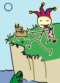
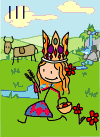

→
Damian Cugley →
Alleged Tarot 2002 →
→
Damian Cugley →
Alleged Tarot 2002 →
 Some while back I produced a minicomic called the Pebble Tarot, depicting the major arcana of the traditional Tarot deck in stick-figure form. In January 2002, I started a project to produce a new version of the stick-figure tarot, this time drawing them in colour and publishing them in SVG format.
 I hope Tarot aficionados will not be too offended by my frivolous stick-figure interpretation. I figure that Tarot illustrations are supposed to be symbolic, and there’s nothing more symbolic than a stick figure. I have done a modicum of research this time around, and have included some of the symbolism from mediaeval and modern decks.